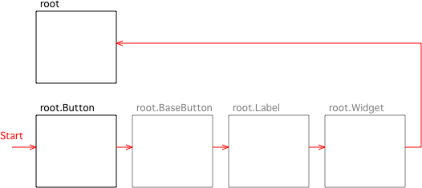
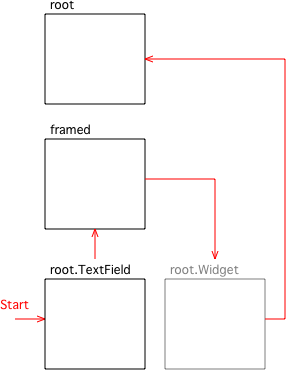

The Theme System
Theme Properties
A property descriptor class called ThemeProperty
is provided for defining theme attributes. When such an attribute is
read, its value is automatically looked up in the current theme
hierarchy starting at theme.root (see the Theme Lookup below for details of the theme lookup process).
Because
looking up a theme attribute can be an expensive process, it is only
done the first time the attribute is read for a particular instance of
the class, and the value cached in an instance attribute having the
same name with "_" prepended. Subsequent access to the theme property
will return the cached value. This means that changing the theme will
not affect the appearance of any widgets that have already been
created. Since themes are intended for establishing the overall
appearance of the application, this should not be a serious problem.
If
you assign to a theme property, the cached value is replaced by the
value you assign. This means you can override the value provided by the
theme by assigning a value to the property just like a normal attribute.
If
you subclass a class that defines a theme property, and define an
initial value for it as a class attribute, it becomes a normal
attribute and is no longer a theme property for that class or its
subclasses (unless a subclass re-defines it as a theme property again).
This can be useful if you are subclassing a widget and don't want to go
to the trouble of setting up a theme for your subclass – you can just
override its theme properties directly in the class.
Fonts as Theme Properties
Theme
properties representing fonts are handled in a special way. To avoid
loading fonts that won't be used, instead of holding a font object, the
theme hierarchy holds a tuple specifying the size and filename of the
font.
A subclass of ThemeProperty called FontProperty
is provided for handling such properties. On first access, it loads the
font and returns the font object as the value of the property.Theme Lookup
Values for theme properties are looked up in a hierarchy of Theme objects, beginning with theme.root.
The root Theme object contains two kinds of attributes: default values
for theme properties, and other Theme objects containing values
pertaining to specific classes.
A value for a particular class C is looked up as follows. First, theme.root
is looked in for a Theme object for class C, and that Theme object is
looked in for a value for the attribute in question. If a value is
found, it is returned. Otherwise, the process is repeated for each of
C's base classes, in method resolution order. If a value is still not
found for the attribute, theme.root itself is looked in for a default value. (If it's not there either, an AttributeError results.)
As
a further refinement, a Theme object can be based on another Theme
object. When looking in a Theme object for an attribute, if not found
it will be looked for in the base theme, if any, and so forth.
As an example, here is an excerpt from theme.py showing how the default theme hierarchy for the Button class is set up:
root = Theme('root')
root.font = (15, "Vera.ttf")
root.fg_color = (255, 255, 255)
root.Button = Theme('Button')
root.Button.font = (18, "VeraBd.ttf")
root.Button.fg_color = (255, 255, 0)
framed = Theme('framed')
framed.border_width = 1
framed.margin = 3
root.TextField = Theme('TextField', base = framed)Here
is a diagram showing the search path when looking up a theme property
for class Button, whose base classes are BaseButton, Label and Widget.

The
theme objects shown in grey don't exist in the default theme hierarchy,
but if an application were to add them, they would be searched in the
order shown.
Here is the search order for the TextField class:
